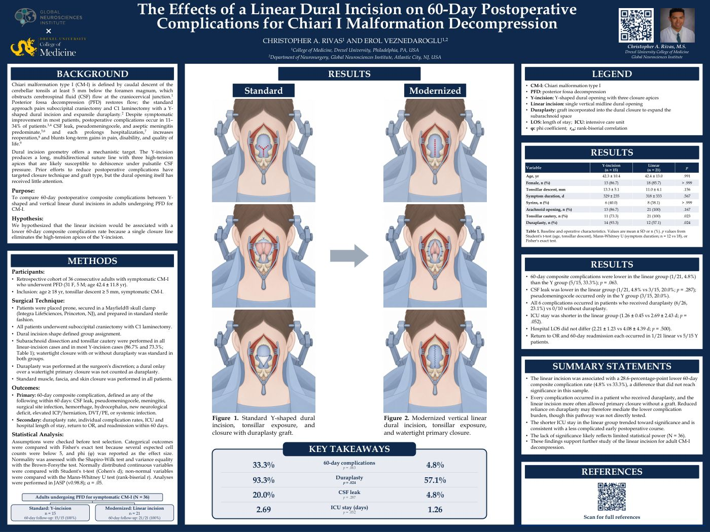

The Effects of a Linear Dural Incision on 60-Day Postoperative Complications for Chiari I Malformation Decompression
Drexel Discovery Day 2026
¹College of Medicine, Drexel University, Philadelphia, PA, USA
²Department of Neurosurgery, Global Neurosciences Institute, Atlantic City, NJ, USA

Abstract
Background: Standard Chiari malformation type I decompression (CM1d), incorporating Y-shaped dural incision with or without duraplasty, carries an 11-34% complication rate that prolongs hospitalization, increases reintervention, and attenuates long-term functional and symptomatic improvements. Prior efforts to reduce this burden have targeted closure technique and graft type, but the dural opening has received little attention. The Y-incision’s multi-apex closure line concentrates tension at each apex, a geometry that may predispose the closure to dehiscence under pulsatile cerebrospinal fluid pressure. We compared Y-shaped and linear dural incision, alongside standard subarachnoid dissection, tonsillar cautery, and dural reapproximation with or without duraplasty, for their effect on 60-day postoperative complications in adult CM1d.
Methods: This retrospective cohort study compared 60-day complications after adult CM1d via Y-shaped (n=15) versus linear (n=21) dural incision; subarachnoid dissection, tonsillar cautery, and closure with or without duraplasty were standard across both groups. Categorical outcomes were compared via Fisher's exact test given small sample size and continuous outcomes failing normality or variance assumptions (Shapiro-Wilk) were compared via Mann-Whitney U.
Results: Duraplasty was performed in significantly more Y-incision (93.3%) than linear-incision (57.1%) patients (p=0.024). Total 60-day complication and reoperation rate was higher in the Y-incision (33.3%) versus the linear incision group (4.8%), but not significant (p=0.063). ICU stay was longer in the Y-incision group (2.69±2.43 vs. 1.26±0.45 days), but not significant (p=0.052).
Conclusions: Linear dural incision was associated with significantly less duraplasty use, alongside a nonsignificant trend toward reduced 60-day complications and length of ICU stay. The lack of significance in these secondary outcomes is likely attributed to small sample size. These preliminary findings support continued evaluation of linear dural incision as a strategy to reduce postoperative morbidity in adult CM1d.
References
- Kular S, Karsonovich T. Chiari Malformation Type 1. In: StatPearls. StatPearls Publishing; 2025. http://www.ncbi.nlm.nih.gov/books/NBK554609/
- Pattisapu JV, Ackerman LL, Infinger LK, et al. Congress of Neurological Surgeons Systematic Review and Evidence-Based Guidelines for Patients With Chiari Malformation: Surgical Interventions. Neurosurgery. 2023;93(4):731-735. doi:10.1227/neu.0000000000002635
- Tam SKP, Brodbelt A, Bolognese PA, Foroughi M. Posterior fossa decompression with duraplasty in Chiari malformation type 1: a systematic review and meta-analysis. Acta Neurochir (Wien). 2021;163(1):229-238. doi:10.1007/s00701-020-04403-9
- Moniruzzaman S, Kaipainen A, Tervonen J, et al. Long-term outcome of operated Chiari I patients between 2005 and 2020 in Eastern Finland. Acta Neurochir (Wien). 2024;166(1):115. doi:10.1007/s00701-024-05999-y
- Arnautovic A, Pojskic M, Arnautovic KI. Adult Chiari Malformation Type I. Neurosurg Clin N Am. 2023;34(1):91-104. doi:10.1016/j.nec.2022.09.004
- Atchley TJ, Alam Y, Gross E, et al. Incidence and management of postoperative pseudomeningocele and cerebrospinal fluid leak after Chiari malformation type I decompression. Neurosurg Focus. 2023;54(3):E8. doi:10.3171/2022.12.FOCUS22631
- Greenberg JK, Ladner TR, Olsen MA, et al. Complications and Resource Use Associated With Surgery for Chiari Malformation Type 1 in Adults: A Population Perspective. Neurosurgery. 2015;77(2):261-268. doi:10.1227/NEU.0000000000000777
- Bhimani AD, Esfahani DR, Denyer S, et al. Adult Chiari I Malformations: An Analysis of Surgical Risk Factors and Complications Using an International Database. World Neurosurg. 2018;115:e490-e500. doi:10.1016/j.wneu.2018.04.077
- Parker SL, Godil SS, Zuckerman SL, et al. Effect of symptomatic pseudomeningocele on improvement in pain, disability, and quality of life following suboccipital decompression for adult Chiari malformation Type I. J Neurosurg. 2013;119(5):1159-1165. doi:10.3171/2013.8.JNS122106